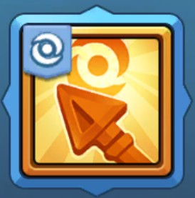
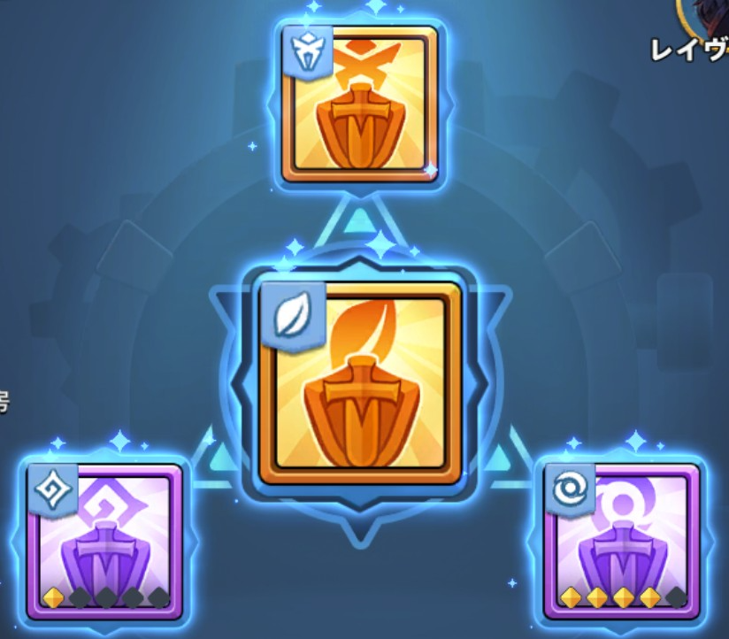

【ラストアサイラム】ルーン工房~育成ガイド~
💡 重要ポイント:
ルーンの有無やレアリティ差が戦力差を覆すほど重要なシステムのため、仕様を把握して効率的に育成を進めましょう！
ルーンの有無やレアリティ差が戦力差を覆すほど重要なシステムのため、仕様を把握して効率的に育成を進めましょう！
🛡️ 陣営アイコンの見分け方
ルーンに付いているアイコンの見た目（中央のマーク）で、どの陣営用かが一目で判別できます。
⚔️ ウォーリア
🏹 レンジャー

📖 ソーサラー
🔮 装備枠と各ルーンの特徴（4スロット）
「レイヴンルーンプラン」から最大4種類のルーンを装着可能です。
| 配置 | ルーン名 | コスト / 性能 | UR時の主な効果 | おすすめ度 |
|---|---|---|---|---|
| 三角形の頂点 | 狂乱の鴉 | 通常 / 超強力 | 攻撃力UP ＋ レイヴンの攻撃ターゲット数増加 | 最優先 |
| 中央 | 自然守護 | 高め / 強力 | シールド付与 ＋ 被ダメージ軽減 | 最優先 |
| 三角形の右下 | 逆転の力 | 通常 / 通常 | 与ダメージUP ＋ スキルダメージ軽減 | 優先 |
| 三角形の左下 | 護衛呪術 | 通常 / 控えめ | 防御力UP | 状況に応じて |

💡 初心者ワンポイントアドバイス
狂乱の鴉はUR星2を目指し、自然守護はURを目指しましょう。逆転の力はSSRの星を重点的に上昇させ、護衛呪術は後回しでOK！
⚙️ ルーンの作成と星上げ（工房仕様）
ルーン工房では「ルーンの欠片」を消費してルーンを作成します。URの欠片はギルドバトル報酬などで獲得可能です。
✨ 優先して作るべきルーン
まずは 「狂乱の鴉」 と 「自然守護」 を最優先で獲得・育成しましょう。特に「狂乱の鴉」は敵への殲滅力に直結するため非常に強力です。
⭐ 星上げ（凸）のルール
- ・星は 1 → 2 → 3 → 4 → 5（MAX） まで上昇。
- ・強化素材として 「同レベル・同種類のルーン」 が必要。
- ・星が1つ上がるごとに必要素材数が1個ずつ増加します。
- ・星MAXまでに必要な同種ルーンの総数は 16個 です。
🦅 レイヴン進化（レベルアップ仕様）
不要になったルーンを素材として消費することで、レイヴン自体のレベルアップが可能です。
- ・ルーン増幅: レベルが 150の倍数 に達するごとにルーン効果が大幅にUPします。
- ・育成方針: 1軍で使用するメインルーン以外は、すべて進化素材にして問題ありません。
💎 ルーンの強さと課金・育成における評価
🔥 圧倒的な戦力差を生むゲームチェンジャー
他のステータスで負けていても、ルーンの質（SSRとURの差）で覆せるほど極めて強力です。UR内でも「星MAX」と「無星」の間には圧倒的な性能差が生まれます。
📈 育成上限と課金効率
星MAX（16個）という明確な上限が存在するため、長期的に見るといつかは育成限界を迎えます。
ただし、戦力に直結する恩恵が非常に大きいため、短期間で大幅に戦力を引き上げるための課金効率・育成効率は極めて高いです。